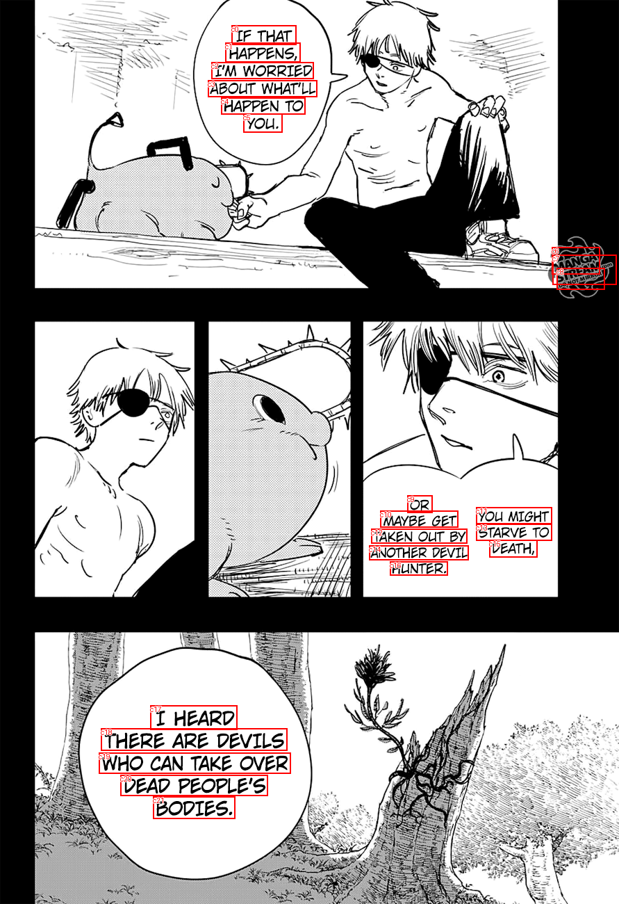
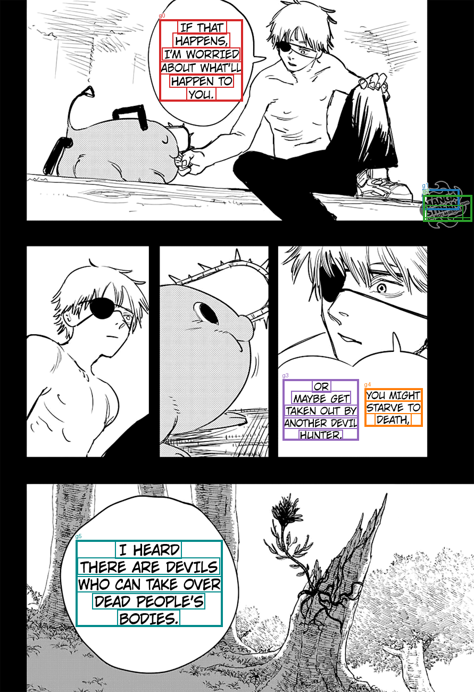

Saved TextExtractionPipeline groups, already filtered and joined. No OCR, filtering, or joining is run by diagnostics. References are comparison only; order is spatial.
Transcript TXT · All candidates and results JSON
IF THAT HAPPENS, I'M WORRIED ABOUT WHAT'LL HAPPEN TO YOU. MANGA STREAM DO NOT MIRROR OR MAYBE GET TAKEN OUIT BY ANOTHER DEVIL HUNTER. YOLUI MIGHT STARVE TO DEATH, I HEARD THERE ARE DEVILS WHO CAN TAKE OVER DEAD PEOPLE'S BODIES.


| Group | OCR IDs | Joined text | Target index | Reference text | Similarity |
|---|---|---|---|---|---|
| g0 | c0, c1, c2, c3, c4, c5 | IF THAT HAPPENS, I'M WORRIED ABOUT WHAT'LL HAPPEN TO YOU. | 0 | IF THAT HAPPENS, I'M WORRIED ABOUT WHAT'LL HAPPEN TO YOU. | 1.0 |
| g1 | c6 | MANGA | |||
| g2 | c7, c8 | STREAM DO NOT MIRROR | |||
| g3 | c9, c10, c12, c14, c16 | OR MAYBE GET TAKEN OUIT BY ANOTHER DEVIL HUNTER. | 1 | YOU MIGHT STARVE TO DEATH, OR MAYBE GET TAKEN OUT BY ANOTHER DEVIL HUNTER. | 0.776 |
| g4 | c11, c13, c15 | YOLUI MIGHT STARVE TO DEATH, | |||
| g5 | c17, c18, c19, c20, c21 | I HEARD THERE ARE DEVILS WHO CAN TAKE OVER DEAD PEOPLE'S BODIES. | 2 | I HEARD THERE ARE DEVILS WHO CAN TAKE OVER DEAD PEOPLE'S BODIES. | 1.0 |
[]
[]
[]
[
{
"id": "c0",
"text": "IF THAT",
"score": 0.9995629191398621,
"box": [
333.0,
36.0,
426.0,
64.0
]
},
{
"id": "c1",
"text": "HAPPENS,",
"score": 0.999771773815155,
"box": [
324.0,
61.0,
432.0,
89.0
]
},
{
"id": "c2",
"text": "I'M WORRIED",
"score": 0.9996282458305359,
"box": [
304.0,
89.0,
451.0,
113.0
]
},
{
"id": "c3",
"text": "ABOUT WHAT'LL",
"score": 0.9990174174308777,
"box": [
299.0,
115.0,
456.0,
139.0
]
},
{
"id": "c4",
"text": "HAPPEN TO",
"score": 0.9998281002044678,
"box": [
318.0,
140.0,
439.0,
164.0
]
},
{
"id": "c5",
"text": "YOU.",
"score": 0.9967193603515625,
"box": [
350.0,
163.0,
406.0,
190.0
]
},
{
"id": "c6",
"text": "MANGA",
"score": 0.9993779063224792,
"box": [
794.0,
355.0,
863.0,
394.0
]
},
{
"id": "c7",
"text": "STREAM",
"score": 0.9996300339698792,
"box": [
795.0,
366.0,
887.0,
409.0
]
},
{
"id": "c8",
"text": "DO NOT MIRROR",
"score": 0.913141667842865,
"box": [
801.0,
385.0,
870.0,
416.0
]
},
{
"id": "c9",
"text": "OR",
"score": 0.9999706149101257,
"box": [
586.0,
712.0,
622.0,
737.0
]
},
{
"id": "c10",
"text": "MAYBE GET",
"score": 0.9997570514678955,
"box": [
547.0,
734.0,
659.0,
758.0
]
},
{
"id": "c11",
"text": "YOLUI MIGHT",
"score": 0.9181140661239624,
"box": [
685.0,
729.0,
794.0,
753.0
]
},
{
"id": "c12",
"text": "TAKEN OUIT BY",
"score": 0.9408483505249023,
"box": [
534.0,
760.0,
672.0,
781.0
]
},
{
"id": "c13",
"text": "STARVE TO",
"score": 0.999950647354126,
"box": [
685.0,
753.0,
794.0,
777.0
]
},
{
"id": "c14",
"text": "ANOTHER DEVIL",
"score": 0.9997960329055786,
"box": [
531.0,
784.0,
674.0,
805.0
]
},
{
"id": "c15",
"text": "DEATH,",
"score": 0.9999608397483826,
"box": [
704.0,
776.0,
773.0,
801.0
]
},
{
"id": "c16",
"text": "HUNTER.",
"score": 0.9997001886367798,
"box": [
561.0,
807.0,
644.0,
827.0
]
},
{
"id": "c17",
"text": "I HEARD",
"score": 0.9994034767150879,
"box": [
216.0,
1014.0,
341.0,
1049.0
]
},
{
"id": "c18",
"text": "THERE ARE DEVILS",
"score": 0.9999563097953796,
"box": [
145.0,
1047.0,
413.0,
1079.0
]
},
{
"id": "c19",
"text": "WHO CAN TAKE OVER",
"score": 0.9823064208030701,
"box": [
142.0,
1082.0,
418.0,
1112.0
]
},
{
"id": "c20",
"text": "DEAD PEOPLE'S",
"score": 0.9997555017471313,
"box": [
173.0,
1114.0,
385.0,
1144.0
]
},
{
"id": "c21",
"text": "BODIES.",
"score": 0.9999784827232361,
"box": [
220.0,
1145.0,
338.0,
1177.0
]
}
]